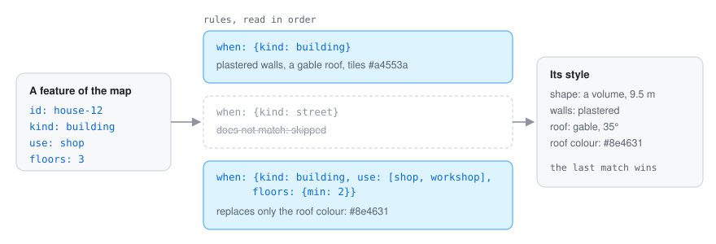
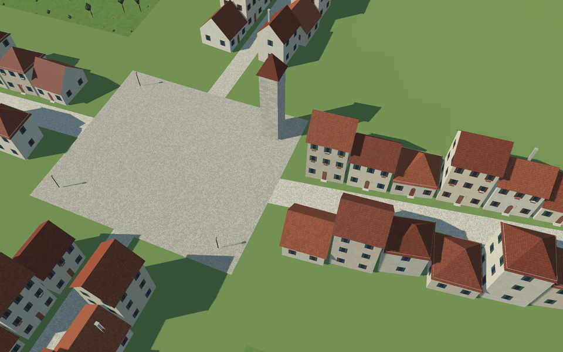
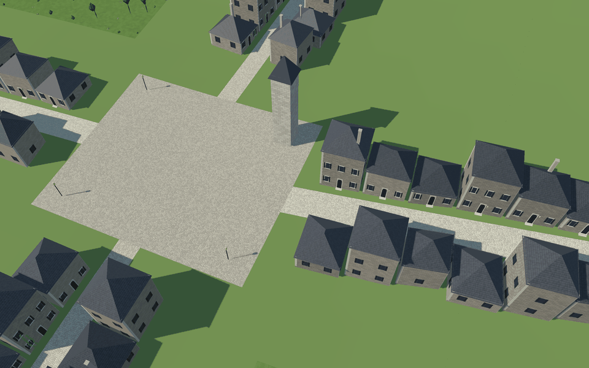

Style rules are where you decide what things look like. They are a YAML file read in cascade, like a style sheet: every rule whose selector matches a feature adds or replaces values, and the last one wins. So you write the general look first (“buildings are plastered, with tiled roofs”) and then the exceptions (“shops with three floors or more have darker roofs”).

units: m
chunk: 0.5 # km: pieces are grouped in squares this big (larger for larger maps)
environment: {sun: [235, 38]} # azimuth and elevation in degrees; water_level adds a sea;
# vertical_scale exaggerates the relief seen from above
models: [models.yaml] # libraries of small models (see decoration)
terrain: {color: "#6b7f47", bands: [{above: 350, color: "#9e9e99", blend: 30}]}
relations:
facing: {when: {kind: street}, reach: 20} # which side of a block looks onto a street
rows: {tolerance: 0.4} # walls closer than this are shared (not drawn)
rules:
- when: {kind: street}
shape: {role: ground, width: "width * 1000", lift: 0.12}
color: "#e6dcc4"
- when: {kind: river}
shape: {role: water, width: "width * 1000", above_bed: 1.8}
- when: {kind: building}
shape: {role: volume, height: "3.5 + (floors - 1) * 3"}
walls: {color: "#e9dfc9"}
roof: {recipe: gable, pitch: 38, ridge: long, eaves: 0.5, color: "#a4553a"}
- when: {kind: building, use: [shop, workshop], floors: {min: 3}}
roof: {color: "#8e4631"}
- when: {kind: wall}
shape: {role: line, height: 9, thickness: 3}
openings: {where: {kind: street, class: road}, width: 6} # a gap where a road crosses it
decorate: [{recipe: gate_towers, size: 6, height: 13}] # and a tower at each side of the gap
- when: {kind: bridge}
shape: {role: line, follow: level, thickness: "width * 1000", height: 0.4, sink: 0.8}
- when: {kind: tower}
shape: {role: point, size: 8, height: 15, form: round}
The example island has two style files for one map. Only the rules for houses and
towers differ: style.yaml plasters the walls and tiles the roofs, style-stone.yaml builds them
in masonry with slate hip roofs, stone frames, corner stones and ivy.
style.yaml: plaster and tiles |
style-stone.yaml: stone and slate |
|---|---|
 |
 |
style.yaml style-stone.yaml
walls: {material: {pattern: plaster}} walls: {material: {pattern: masonry}}
roof: {recipe: gable, pitch: 35, color: "#a4553a"} roof: {recipe: hip, pitch: 30, color: "#4a4f57"}
stonework: {plinth: 0.6} stonework: {plinth: 0.8, quoins: {width: 0.45}}
(A few lines of each, with one colour of each palette; the files have the rest.)
A selector (when) uses go-simulator’s condition language: the kind, a property equal to a value
or to one of a list, or a number within {min, max}.
Values can be:
#rrggbb colours, or "@name": the colour in the feature’s property name;"3.5 + (floors - 1) * 3".| Role | Becomes |
|---|---|
ground |
a polygon (or a line widened by width) draped lift metres over the relief: streets, gardens, squares |
water |
a level sheet above_bed metres over the bed under the feature’s own line |
volume |
a block: walls from sink metres under the lowest ground under its corners up to height, where the roof starts |
line |
prisms of thickness and height in pieces of segment metres following the ground; with follow: level, one level prism whose top is height over its highest end, like a bridge deck |
point |
a square or round block of size metres, decorated like volumes |
model |
a model from a library, placed on a point (see decoration) |
none |
nothing |
Every part can set its material:
material: {pattern: cobbles, scale: 0.35}: a procedural pattern (cobbles, masonry,
plaster, shingles, planks or grass, metres per cell) that go-renderer draws on the fly:
detail without textures or extra triangles;material: {kind: glow}: shines in the dark, like lanterns;material: {foliage: true}: takes the season’s colour;material: {hide_below: 0.1}: hidden when it looks smaller than this share of the screen.Volumes are dressed by recipes:
walls: colour and material. Where a neighbour leans against a wall, only the part above its
eaves is drawn.roof: recipe flat, gable or hip, with pitch (degrees), eaves (overhang, metres),
color and ridge: long or short (the side of the footprint’s rectangle the ridge follows),
along_street or across_street (relative to the side that faces a street). Under a sloped roof
the walls stand on the footprint’s smallest rectangle, like the roof.roof.chimneys: {share, width, above}: stone chimneys on a share of the houses.stonework: {plinth, quoins}: a stone plinth and corner stones.Houses stand halfway between their lowest and highest corners (seat: middle, the default; or
lowest, highest): on a slope they are cut into the hill uphill and rise on a stone base
downhill. A door above the street gets stone steps down to it, and the plinth leaves the door and
its steps free. A footprint that is not nearly a rectangle keeps its walls on the footprint, so
they meet the neighbours’ exactly, under a roof sloping from every side.
terrain sets the ground’s color, its material, and bands: colours above a height
({above, color, blend}), for rock or snow. With a layer of biomes, terrain.biomes colours each
biome and sows its plants (decoration).